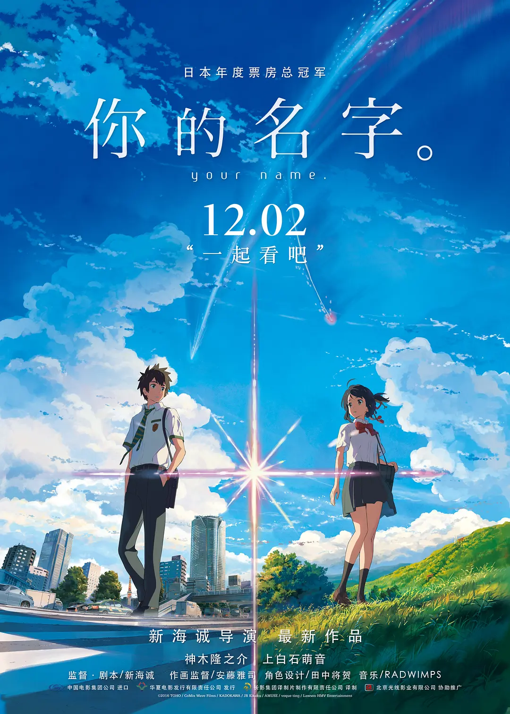

在远离大都会的小山村，住着巫女世家出身的高中女孩宫水三叶（上白石萌音 配音）。校园和家庭的原因本就让她充满烦恼，而近一段时间发生的奇怪事件，又让三叶摸不清头脑。不知从何时起，三叶在梦中就会变成一个住在东京的高中男孩。那里有陌生的同学和朋友，有亲切的前辈和繁华的街道，一切都是如此诱人而真实。另一方面，住在东京的高中男孩立花泷（神木隆之介 配音）则总在梦里来到陌生的小山村，以女孩子的身份过着全新的生活。许是受那颗神秘彗星的影响，立花和三叶在梦中交换了身份。他们以他者的角度体验着对方的人生，这期间有愤怒、有欢笑也有暖心。只是两人并不知道，身份交换的背后隐藏着重大而锥心的秘密……
本片为2016年度日本本土影片票房冠军。
本片为2016年度日本本土影片票房冠军。